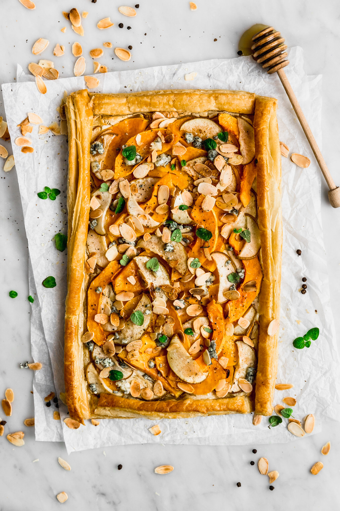
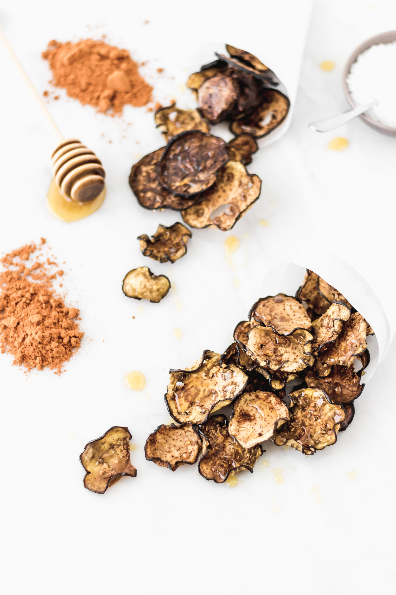

Arrolladitos primavera
Estos spring rolls son un bocado fresco, ligero y lleno de color, ideales para quienes buscan una entrada saludable y deliciosa. Cada rollito combina verduras crujientes con palta cremosa, envueltas en un delicado papel de arroz que aporta suavidad y textura. Se acompañan con una salsa de maní y soja, ligeramente cítrica y especiada, que realza todos los sabores y convierte cada mordisco en una experiencia fresca, nutritiva y muy sabrosa.
- 250 g de hojas de espinacas
- 250 g de champiñones
- 1 cucharada de aceite de oliva
- 140 g de queso crema, a temperatura ambiente
- 2 cucharadas de queso parmesano rallado
- Pimienta blanca molida Goumet
- 12 tapas de empanadas de horno
- Aceite de oliva para pincelar la masa
- Sésamo Gourmet para espolvorear
Para preparar los rollitos primaveras, primero corta todas las verduras en bastones finos y reserva. Humedece una lámina de papel de arroz en agua tibia hasta que se ablande, retírala con cuidado y colócala sobre una superficie limpia. Distribuye las verduras en el centro, dobla los extremos y enrolla con cuidado hasta cerrar el rollito. Repite el proceso con el resto de las láminas y, si se desea, corta cada rollito por la mitad. Para la salsa, mezcla todos los ingredientes hasta integrar y espolvorea semillas de sésamo por encima antes de servir.
Canastas de papas rellenas
Estas papas soufflé al horno son una entrada elegante y sabrosa, perfecta para sorprender a tus invitados. Crujientes por fuera y suaves por dentro, se condimentan con sal, pimienta y romero, y se coronan con queso rallado, jamón y un toque de pesto, combinando texturas y sabores en cada bocado. Una receta sencilla que eleva un clásico ingrediente como la papa a un aperitivo delicioso y muy vistoso.
- 6 papas soufflé
- Aceite de oliva
- Sal de Mar Gourmet a gusto
- Mix de Pimientas Gourmet a gusto
- Romero Gourmet a gusto
- ¼ taza de queso rallado
- ¼ taza de jamón
- 6 cucharaditas de Pesto Gourmet
Lava bien las papas y pon a hervir abundante agua en una olla. Cocina las papas durante 15-20 minutos hasta que estén tiernas. Mientras tanto, engrasa un molde para muffins con aceite de oliva y precalienta el horno a 230 °C.
Cuando las papas estén listas, sécalas y deja que se enfríen un poco. Coloca una papa en cada molde de muffin y aplástala con un vaso o utensilio plano. Condimenta con sal y pimienta, agrega una cucharadita de pesto en cada una, luego el queso rallado, el jamón y un poco de romero al gusto.
Hornea durante 20-25 minutos hasta que se doren y estén crujientes. Deja reposar unos 10 minutos antes de desmoldar y sirve inmediatamente.
Tarta de zapallo y pera con miel y queso azul
Esta tarta de zapallo y pera con queso combina lo dulce y lo salado en un plato elegante y sabroso. La masa hojaldrada aporta un exterior crujiente, mientras que el relleno de zapallo, pera y queso crema crea una textura suave y delicada. Se corona con miel, queso azul y almendras tostadas para un contraste de sabores irresistible, ideal como entrada o plato principal ligero.
- ½ receta de masa de hojaldre
- 1 huevo + 1 cda de agua para pintar la masa
- 200 g de queso crema ligeramente tibio
- Sal y pimienta a gusto
- 300 g de zapallo pelado en láminas de 2-3 mm
- 1 pera pequeña en láminas de 2-3 mm
- 2 cdas de aceite de oliva
- Queso azul desmenuzado para terminar
- Almendras tostadas para terminar
- Generosa cantidad de miel
- Hojas de orégano u otra hierba fresca
Estira la masa de hojaldre hasta obtener un rectángulo de unos 3 mm de grosor y aproximadamente 40x28 cm, recortando apenas los bordes para emparejarla. Forma un borde doblando tiras de 2 cm sobre los lados y pegándolas con huevo batido mezclado con agua.
Entibia el queso crema y mézclalo con sal y pimienta; extiéndelo sobre la masa, dejando los bordes libres. Mezcla el zapallo y la pera con aceite de oliva, sal y pimienta, y distribúyelos sobre el centro de la masa. Añade un poco más de aceite sobre el relleno y pinta los bordes con huevo y agua.
Hornea en horno precalentado a 180 °C durante 45 minutos a 1 hora, hasta que la tarta esté dorada por arriba y por abajo. Al salir del horno, termina con miel, queso azul desmenuzado, almendras tostadas y hojas de orégano fresco antes de servir.

Chips de berenjena con miel
Estos chips de berenjena al horno con miel y especias son un snack ligero y delicioso, que combina el sabor ahumado de la berenjena con un toque picante de cayena y paprika, y un contraste dulce gracias a la miel. Crujientes y aromáticos, son perfectos como entrada, acompañamiento o tentempié saludable.
- 1 berenjena grande y firme
- Sal
- Aceite de oliva extra virgen
- Pimienta cayena
- Paprika
- Miel
Corta la berenjena en chips de no más de 2 mm de grosor. Colócalos sobre una superficie limpia y espolvorea con abundante sal; deja reposar unos 10 minutos para que suelten agua y amargor. Enjuaga bien los chips y no agregues más sal.
Coloca los chips sobre una bandeja de horno con papel manteca, sin que se superpongan, y pinta ligeramente con aceite de oliva. Espolvorea pimienta cayena con cuidado y paprika al gusto; opcionalmente, puedes añadir orégano seco, ajo o cebolla en polvo.
Hornea en horno precalentado a 125 °C durante aproximadamente 45-60 minutos, revisando a partir de los 45 minutos para evitar que se doren demasiado. Deja enfriar completamente y añade hilos de miel justo antes de servir para mantener su textura crujiente.
